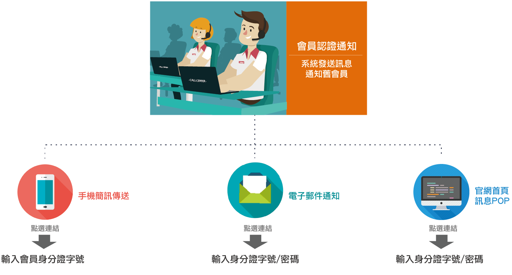
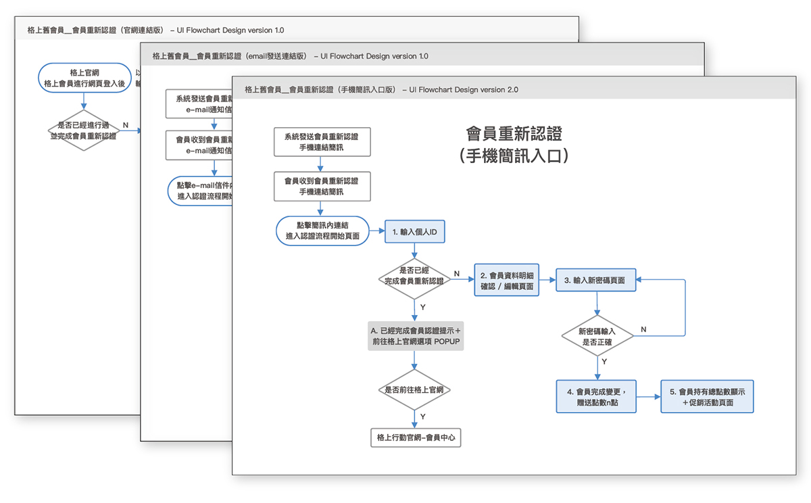
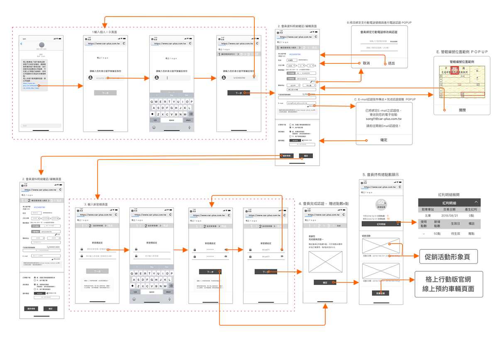
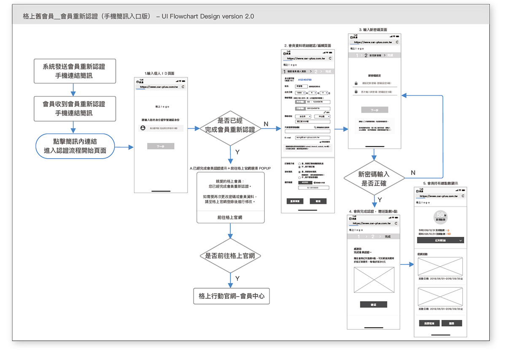
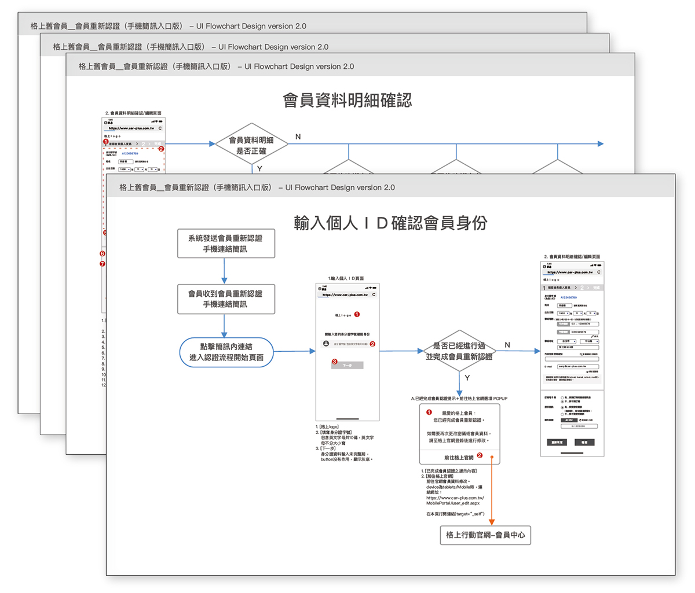
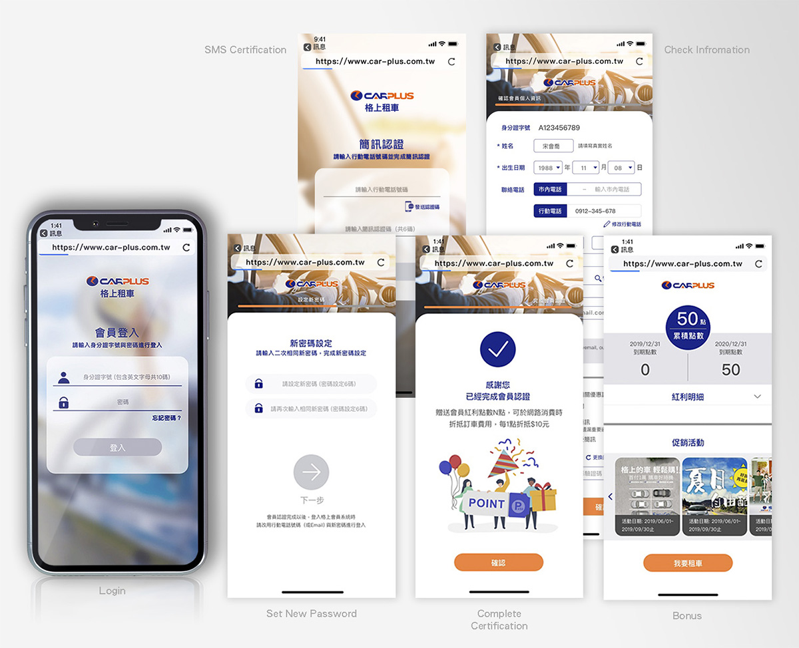
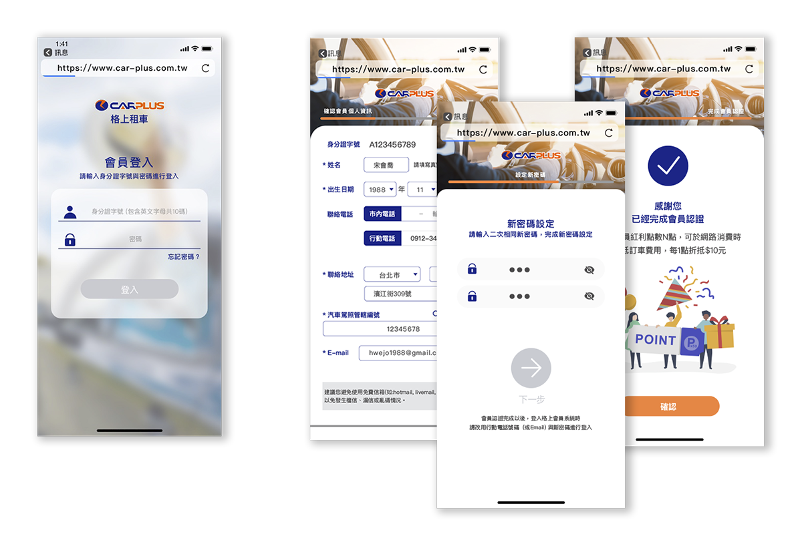
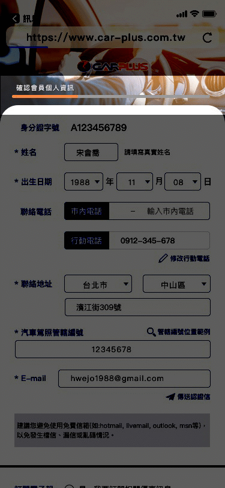

＞作品PORTFILIO＞MEMBER AUTHENTICATION SYSTEM
UI + UX creation from dcratch）
ＲＷＤ (Mobile / Tablet / Desktop)
因為會員機制行之有年，但早期會員認證流程未進行規劃統一與舊會員資料過多，造成資料庫負重。
藉由完成舊會員認證，送紅利享現金折扣的活動，以達到顧客再次回流進行訂車消費與清洗會員。
初步需求訪談後，首先利用發散思維，通過不同方向思考，挖掘更多潛在需求功能延伸與尋求創造產品獨特性之可能，再進行聚合思維，聚焦整合專案功能需求，減少日後需求規格的反覆定義狀況。
藉由競品分析，了解目前市面上已存在哪些相同或類似功能，站在使用者角度，了解現有使用流程是否滿足了使用者體驗需求。 進而，參照直覺式使用者使用流程或介面功能與不符合使用體驗之設計，幫助自己快速有效的找到流程規劃方向要點。
針對三種不同裝置、任務觸發入口，分析人機互動行為與主要使用流程, 密切與需求單位或ＲＤ來回討論與招開會議，修改並完成此階段流程規劃。
繪製Wireframe畫面框架圖，並製作UI FLOW，與需求單位、ＲＤ等實際操作講解說明，確認需求功能完整、操作流程順暢；針對此階段所得到的改善方向Feedback，進行優化的修改調整。
攥寫規格書，利用Flow Chart帶入Wireframe 畫面串連，圖文並行的說明方式，更易於讀取理解。定義說明畫面介面設計規格與介面人機互動行為，並在此階段，加入更多細部使用者體驗考量。
主要使用者操作流程
各階段細部使用者操作流程分析 / 介面設計規格與人機互動定義
使用族群為公司舊會員，故以格上之企業ＣＩ主色（以藍色為主色，橘色為輔色），遵循「視覺完形心理學」，重視使用者視覺感受，並以功能驅動設計，有意義帶入恰到好處的ICON與視覺設計，達到美學完整性，加強產品活潑感與介面直覺性。
區別主要認證步驟與登入的版型設計，讓使用者直覺感知所處狀態。
利用扁平式設計的色塊與ICON，在不引人注意下，達到指引、通知與焦點作用，保持使用者專注力。
利用完形心理學之連續性概念應用，截斷畫面，促使使用者自動判斷內容未完，產生左右查看滑動畫面之使用者行為。
主要認證步驟完成進度顯示，滿足使用者可預期感之心理感受。
紅利點數使用紀錄，可選擇下拉或隱藏，增加使用者操控自主性。
輸出MOCKKUP畫面開發規格與元件，提供給前端開發工程師，並進行開發前畫面說明解釋，前端畫面開發過程中， 查看與關心畫面開發問題或完成度，隨時進行微調